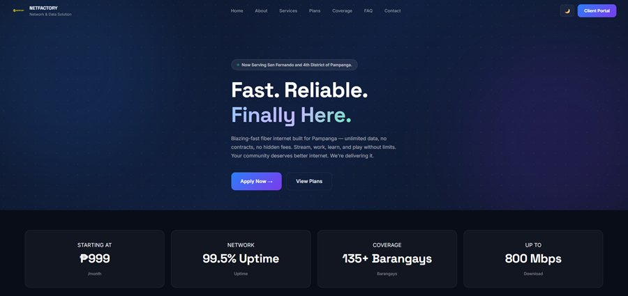
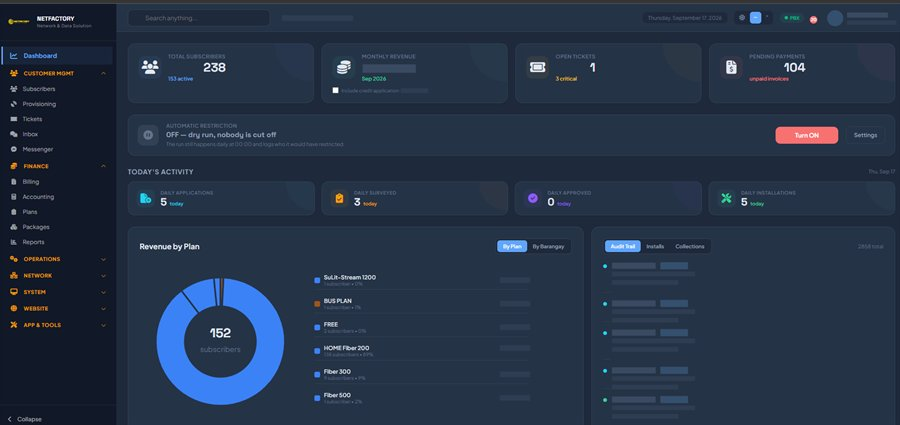
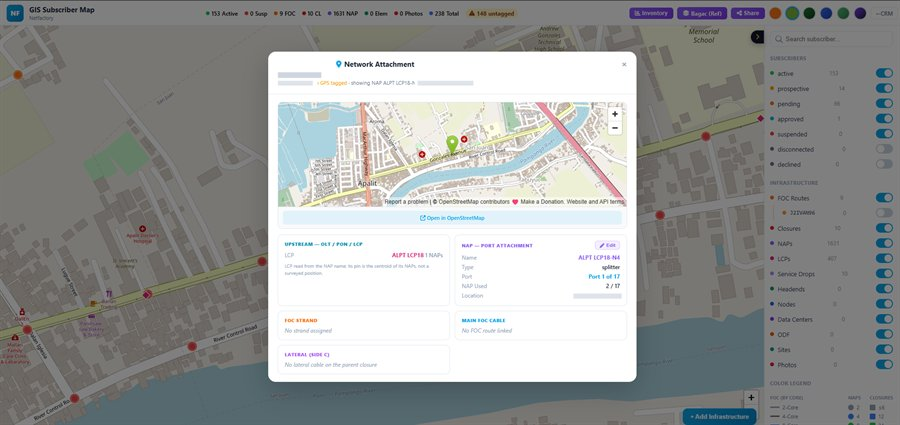
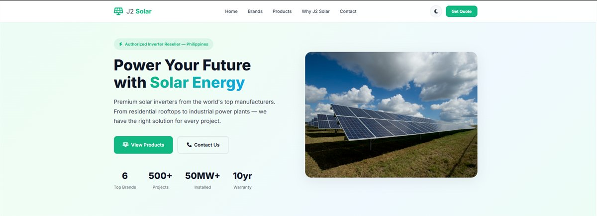
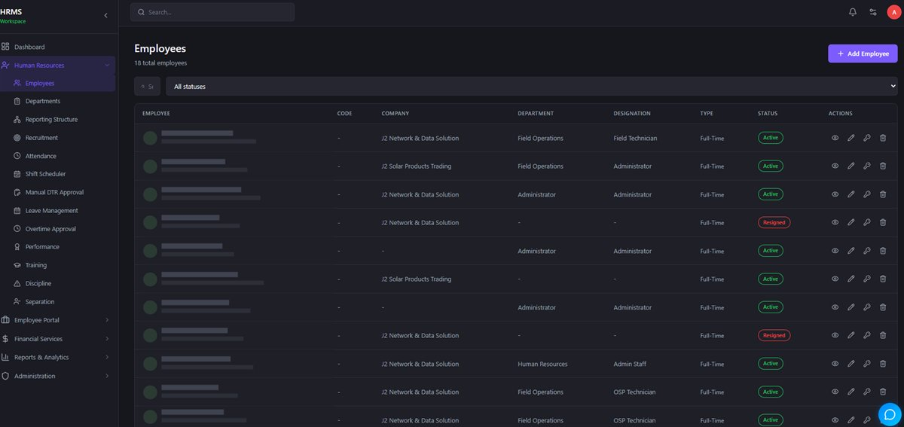
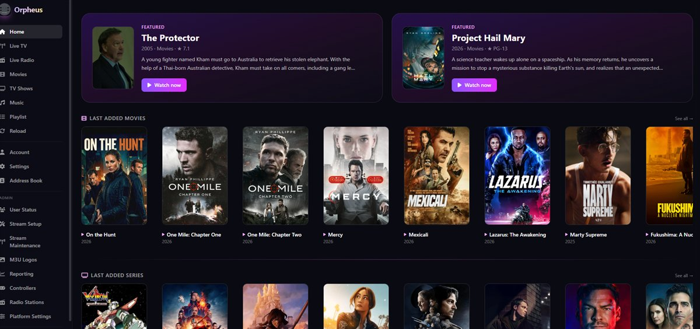

<title>Avelino Legion Jr.</title>
<link rel="preconnect" href="https://fonts.googleapis.com">
<link rel="preconnect" href="https://fonts.gstatic.com" crossorigin>
<link rel="stylesheet" href="https://fonts.googleapis.com/css2?family=Archivo:wght@500;600;700;800&family=IBM+Plex+Mono:wght@400;500&family=Source+Serif+4:ital,opsz,wght@0,8..60,400;0,8..60,600;1,8..60,400&display=swap">
<style>
  :root{
    --paper:#EBEEE7;
    --surface:#F7F8F4;
    --surface-2:#E2E6DC;
    --ink:#171F1B;
    --ink-2:#46534C;
    --ink-3:#6E7C74;
    --rule:#C9D0C4;
    --rule-strong:#A6B0A2;
    --water:#0F6079;
    --water-soft:#DCE8EC;
    --terrain:#8F6320;
    --cover:#3F6139;
    --header-bg:rgba(235,238,231,.86);
    --contour-line:rgba(23,31,27,.11);
    --contour-index:rgba(15,96,121,.30);
    --lift:0 1px 0 rgba(23,31,27,.05), 0 14px 28px -24px rgba(23,31,27,.75);
    --sans:"Archivo","Helvetica Neue",Arial,sans-serif;
    --serif:"Source Serif 4",Georgia,"Times New Roman",serif;
    --mono:"IBM Plex Mono",ui-monospace,"Cascadia Mono",Consolas,monospace;
  }
  @media (prefers-color-scheme: dark){
    :root:not([data-theme="light"]){
      --paper:#0F1513;
      --surface:#161E1B;
      --surface-2:#1D2724;
      --ink:#E7EBE4;
      --ink-2:#AAB6AE;
      --ink-3:#85918A;
      --rule:#27322E;
      --rule-strong:#3C4A44;
      --water:#5EC0DC;
      --water-soft:#132B33;
      --terrain:#D3A059;
      --cover:#8CB980;
      --header-bg:rgba(15,21,19,.86);
      --contour-line:rgba(231,235,228,.075);
      --contour-index:rgba(94,192,220,.22);
      --lift:0 1px 0 rgba(255,255,255,.03), 0 16px 30px -26px #000;
    }
  }
  :root[data-theme="dark"]{
    --paper:#0F1513;
    --surface:#161E1B;
    --surface-2:#1D2724;
    --ink:#E7EBE4;
    --ink-2:#AAB6AE;
    --ink-3:#85918A;
    --rule:#27322E;
    --rule-strong:#3C4A44;
    --water:#5EC0DC;
    --water-soft:#132B33;
    --terrain:#D3A059;
    --cover:#8CB980;
    --header-bg:rgba(15,21,19,.86);
    --contour-line:rgba(231,235,228,.075);
    --contour-index:rgba(94,192,220,.22);
    --lift:0 1px 0 rgba(255,255,255,.03), 0 16px 30px -26px #000;
  }

  body{
    background:var(--paper);
    color:var(--ink);
    font-family:var(--serif);
    font-size:17px;
    line-height:1.65;
    -webkit-font-smoothing:antialiased;
  }
  *{box-sizing:border-box}
  a{color:inherit}
  ::selection{background:var(--water);color:var(--paper)}
  :focus-visible{outline:2px solid var(--water);outline-offset:3px;border-radius:2px}

  .wrap{max-width:1120px;margin-inline:auto;padding-inline:clamp(20px,5vw,56px)}

  /* ---------- masthead ---------- */
  .masthead{
    position:sticky;top:env(safe-area-inset-top,0px);z-index:40;
    background:var(--header-bg);
    backdrop-filter:saturate(140%) blur(10px);
    border-bottom:1px solid var(--rule);
  }
  .masthead .wrap{
    display:flex;align-items:center;gap:20px;
    min-height:58px;padding-block:8px;
  }
  .brand{
    font-family:var(--sans);font-weight:800;font-size:14px;
    letter-spacing:.14em;text-transform:uppercase;text-decoration:none;
    white-space:nowrap;
  }
  .brand span{color:var(--water)}
  .masthead nav{
    margin-left:auto;display:flex;align-items:center;gap:clamp(12px,2.2vw,26px);
    font-family:var(--mono);font-size:11.5px;letter-spacing:.1em;text-transform:uppercase;
  }
  .masthead nav a{color:var(--ink-2);text-decoration:none;padding-block:4px;border-bottom:1px solid transparent}
  .masthead nav a:hover{color:var(--ink);border-bottom-color:var(--water)}
  .theme-toggle{
    font-family:var(--mono);font-size:11.5px;letter-spacing:.1em;text-transform:uppercase;
    background:transparent;border:1px solid var(--rule-strong);color:var(--ink-2);
    padding:5px 10px;border-radius:2px;cursor:pointer;
  }
  .theme-toggle:hover{color:var(--ink);border-color:var(--water)}
  @media (max-width:760px){ .masthead nav .nav-link{display:none} }

  /* ---------- hero ---------- */
  .hero{position:relative;overflow:hidden;border-bottom:1px solid var(--rule)}
  #relief{
    position:absolute;inset:0;width:100%;height:100%;
    pointer-events:none;
    -webkit-mask-image:linear-gradient(180deg,#000 0%,#000 58%,transparent 100%);
    mask-image:linear-gradient(180deg,#000 0%,#000 58%,transparent 100%);
  }
  .hero .wrap{
    position:relative;z-index:1;
    padding-block:clamp(52px,9vw,104px) clamp(36px,6vw,64px);
    display:grid;grid-template-columns:minmax(0,1.5fr) minmax(0,296px);
    gap:clamp(30px,5vw,68px);align-items:center;
  }
  @media (max-width:900px){
    .hero .wrap{grid-template-columns:1fr;gap:36px;align-items:start}
  }
  .eyebrow{
    font-family:var(--mono);font-size:11.5px;letter-spacing:.18em;text-transform:uppercase;
    color:var(--ink-3);display:flex;align-items:center;gap:12px;margin:0 0 22px;
  }
  .eyebrow::after{content:"";height:1px;flex:1;background:var(--rule);max-width:180px}
  h1{
    font-family:var(--sans);font-weight:800;
    font-size:clamp(2.35rem,7.4vw,4.75rem);
    line-height:.96;letter-spacing:-.035em;text-transform:uppercase;
    text-wrap:balance;margin:0 0 20px;
  }
  h1 .jr{color:var(--ink-3)}
  .lede{
    font-size:clamp(1.05rem,2.2vw,1.3rem);line-height:1.55;
    max-width:44ch;color:var(--ink-2);margin:0 0 26px;
  }
  .lede strong{color:var(--ink);font-weight:600}
  .hero-actions{display:flex;flex-wrap:wrap;gap:12px;align-items:center}
  .btn{
    font-family:var(--sans);font-weight:600;font-size:14px;letter-spacing:.02em;
    text-decoration:none;padding:11px 20px;border-radius:2px;
    border:1px solid var(--water);background:var(--water);color:var(--paper);
    transition:transform .15s ease, box-shadow .15s ease;
  }
  .btn:hover{transform:translateY(-1px);box-shadow:var(--lift)}
  .btn.ghost{background:transparent;color:var(--ink);border-color:var(--rule-strong)}
  .btn.ghost:hover{border-color:var(--water);color:var(--water)}
  /* Download arrow: mono so it matches the &#8599; used on outbound links,
     and nudged down a hair to sit on the cap line of the label. */
  .btn .dl{font-family:var(--mono);font-size:13px;display:inline-block;translate:0 1px}

  /* portrait plate */
  .plate{margin:0;max-width:296px}
  @media (max-width:900px){ .plate{max-width:232px} }
  .plate-frame{
    padding:9px;border:1px solid var(--rule-strong);border-radius:2px;
    background:
      linear-gradient(var(--water),var(--water)) 0 0/11px 1px no-repeat,
      linear-gradient(var(--water),var(--water)) 0 0/1px 11px no-repeat,
      linear-gradient(var(--water),var(--water)) 100% 0/11px 1px no-repeat,
      linear-gradient(var(--water),var(--water)) 100% 0/1px 11px no-repeat,
      linear-gradient(var(--water),var(--water)) 0 100%/11px 1px no-repeat,
      linear-gradient(var(--water),var(--water)) 0 100%/1px 11px no-repeat,
      linear-gradient(var(--water),var(--water)) 100% 100%/11px 1px no-repeat,
      linear-gradient(var(--water),var(--water)) 100% 100%/1px 11px no-repeat,
      var(--surface);
    box-shadow:var(--lift);
  }
  .plate img{
    display:block;width:100%;max-width:100%;height:auto;
    aspect-ratio:3/4;object-fit:cover;object-position:50% 45%;
    border-radius:1px;filter:saturate(.94);
  }
  .plate figcaption{
    margin-top:13px;display:flex;gap:10px;align-items:flex-start;
    font-family:var(--mono);font-size:10.5px;line-height:1.6;letter-spacing:.11em;
    text-transform:uppercase;color:var(--ink-3);
  }
  .plate figcaption svg{flex:none;translate:0 3px}
  .plate figcaption b{display:block;color:var(--ink-2);font-weight:500}

  /* ---------- collar ---------- */
  .collar{border-bottom:1px solid var(--rule);background:var(--surface)}
  .collar .wrap{
    display:grid;grid-template-columns:repeat(auto-fit,minmax(150px,1fr));
    gap:1px;padding-block:0;
  }
  .collar dl{margin:0;padding:18px 0 18px 18px;border-left:1px solid var(--rule)}
  .collar dl:first-child{border-left:0;padding-left:0}
  .collar dt{
    font-family:var(--mono);font-size:10.5px;letter-spacing:.16em;text-transform:uppercase;
    color:var(--ink-3);margin:0 0 6px;
  }
  .collar dd{
    margin:0;font-family:var(--sans);font-weight:700;font-size:20px;letter-spacing:-.01em;
    font-variant-numeric:tabular-nums;
  }
  .collar dd small{font-family:var(--serif);font-weight:400;font-size:14px;color:var(--ink-2);letter-spacing:0}
  @media (max-width:640px){
    .collar dl{padding-left:0;border-left:0;border-top:1px solid var(--rule);padding-block:14px}
    .collar dl:first-child{border-top:0}
  }

  /* ---------- section scaffolding ---------- */
  section.band{border-bottom:1px solid var(--rule)}
  section.band > .wrap{padding-block:clamp(48px,7vw,86px)}
  .band-head{margin:0 0 clamp(28px,4vw,44px);max-width:70ch}
  .band-head h2{
    font-family:var(--sans);font-weight:700;
    font-size:clamp(1.55rem,3.6vw,2.35rem);line-height:1.08;letter-spacing:-.025em;
    margin:0 0 12px;text-wrap:balance;
  }
  .band-head p{margin:0;color:var(--ink-2);max-width:64ch}

  /* ---------- practice ---------- */
  .practice{display:grid;grid-template-columns:repeat(auto-fit,minmax(240px,1fr));gap:1px;background:var(--rule)}
  .practice article{background:var(--paper);padding:26px 24px 28px}
  .practice h3{
    font-family:var(--sans);font-weight:700;font-size:17px;letter-spacing:-.01em;
    margin:0 0 10px;display:flex;align-items:baseline;gap:10px;
  }
  .keyline{width:14px;height:14px;flex:none;border-radius:2px;translate:0 2px}
  .k-water{background:var(--water)}
  .k-terrain{background:var(--terrain)}
  .k-cover{background:var(--cover)}
  .k-ink{background:var(--ink-2)}
  .practice p{margin:0 0 14px;font-size:15.5px;line-height:1.6;color:var(--ink-2)}
  .practice ul{
    margin:0;padding:0;list-style:none;
    font-family:var(--mono);font-size:11.5px;letter-spacing:.04em;color:var(--ink-3);
    display:flex;flex-wrap:wrap;gap:6px 10px;
  }

  /* ---------- platforms ---------- */
  /* Fixed two-up rather than auto-fit. With five cards and one spanning the
     full width, auto-fit flipped between two and three tracks depending on
     viewport and left a half-empty row either side of the wide card. */
  .platforms{display:grid;grid-template-columns:repeat(2,minmax(0,1fr));gap:clamp(18px,2.6vw,26px)}
  @media (max-width:720px){ .platforms{grid-template-columns:1fr} }
  .platform{
    background:var(--surface);border:1px solid var(--rule);border-radius:3px;
    padding:24px;display:flex;flex-direction:column;gap:14px;
    transition:border-color .16s ease, transform .16s ease, box-shadow .16s ease;
  }
  .platform:hover{border-color:var(--rule-strong);transform:translateY(-2px);box-shadow:var(--lift)}
  .platform-top{display:flex;justify-content:space-between;align-items:flex-start;gap:16px}
  .platform h3{font-family:var(--sans);font-weight:700;font-size:21px;letter-spacing:-.02em;margin:0 0 4px}
  .platform .sector{
    font-family:var(--mono);font-size:10.5px;letter-spacing:.16em;text-transform:uppercase;color:var(--ink-3);
  }
  .platform .domain{
    font-family:var(--mono);font-size:12.5px;color:var(--water);text-decoration:none;
    border-bottom:1px solid transparent;white-space:nowrap;
  }
  .platform .domain:hover{border-bottom-color:currentColor}
  .platform p{margin:0;font-size:15.5px;line-height:1.6;color:var(--ink-2)}
  /* Interface shot inside a platform card. Framed like the hero portrait plate
     so a screenshot reads as a plate on the sheet rather than a loose image. */
  .shot{margin:0;border:1px solid var(--rule);border-radius:2px;background:var(--paper);overflow:hidden}
  .shot img{display:block;width:100%;height:auto}
  .shot figcaption{
    font-family:var(--mono);font-size:10px;letter-spacing:.11em;text-transform:uppercase;
    color:var(--ink-3);padding:7px 9px;border-top:1px solid var(--rule);
  }
  /* A platform carrying several shots spans the whole grid, so it doesn't
     stretch the card it would otherwise share a row with. */
  .platform.wide{grid-column:1/-1}
  .shots{display:grid;grid-template-columns:repeat(3,minmax(0,1fr));gap:12px}
  @media (max-width:760px){ .shots{grid-template-columns:1fr} }
  /* Marks a shot whose real data has been anonymised, so nobody reads the
     placeholder bars as a rendering fault. */
  .shot .redacted{
    color:var(--ink-3);opacity:.75;border-left:1px solid var(--rule);
    margin-left:7px;padding-left:8px;
  }
  .chips{display:flex;flex-wrap:wrap;gap:7px;margin-top:auto;padding-top:4px}
  .chip{
    font-family:var(--mono);font-size:11px;letter-spacing:.03em;
    border:1px solid var(--rule);border-radius:2px;padding:3px 8px;color:var(--ink-2);
    background:var(--paper);
  }

  /* ---------- legend (LGU systems) ---------- */
  .lgu-grid{display:grid;grid-template-columns:1.35fr 1fr;gap:clamp(28px,4vw,56px);align-items:start}
  @media (max-width:860px){ .lgu-grid{grid-template-columns:1fr} }
  .legend{border-top:1px solid var(--rule-strong)}
  .legend-row{
    display:grid;grid-template-columns:auto 62px 1fr;align-items:baseline;gap:14px;
    padding:11px 0;border-bottom:1px solid var(--rule);
  }
  .legend-row .sw{width:13px;height:13px;border-radius:2px;translate:0 2px}
  .legend-row code{
    font-family:var(--mono);font-size:11.5px;letter-spacing:.06em;color:var(--ink-3);
  }
  .legend-row span{font-size:15.5px;line-height:1.45}
  .sheet{
    background:var(--surface);border:1px solid var(--rule);border-radius:3px;padding:22px;
  }
  .sheet h3{
    font-family:var(--mono);font-size:11px;letter-spacing:.18em;text-transform:uppercase;
    color:var(--ink-3);margin:0 0 16px;font-weight:500;
  }
  .place{display:flex;justify-content:space-between;gap:14px;padding:10px 0;border-top:1px solid var(--rule)}
  .place:first-of-type{border-top:0;padding-top:0}
  .place b{font-family:var(--sans);font-weight:600;font-size:15px}
  .place em{display:block;font-style:normal;font-size:13px;color:var(--ink-3)}
  .place .coord{
    font-family:var(--mono);font-size:11.5px;color:var(--ink-2);text-align:right;white-space:nowrap;
    font-variant-numeric:tabular-nums;
  }
  .sheet .note{
    margin:16px 0 0;font-size:13px;line-height:1.5;color:var(--ink-3);
    padding-top:14px;border-top:1px solid var(--rule);
  }

  /* ---------- timeline ---------- */
  .role{
    display:grid;grid-template-columns:172px 1fr;gap:clamp(18px,3vw,40px);
    padding-block:clamp(26px,3.4vw,38px);border-top:1px solid var(--rule);
  }
  .role:first-of-type{border-top:1px solid var(--rule-strong)}
  .role .when{
    font-family:var(--mono);font-size:12px;letter-spacing:.04em;color:var(--ink-3);
    font-variant-numeric:tabular-nums;
  }
  .role .when b{display:block;color:var(--ink);font-weight:500;font-size:13px;margin-bottom:4px}
  .role h3{font-family:var(--sans);font-weight:700;font-size:20px;letter-spacing:-.02em;margin:0 0 4px;text-wrap:balance}
  .role .org{font-size:15px;color:var(--water);margin:0 0 14px}
  .role ul{margin:0;padding:0;list-style:none;display:flex;flex-direction:column;gap:10px}
  .role li{position:relative;padding-left:20px;font-size:15.5px;line-height:1.6;color:var(--ink-2);max-width:68ch}
  .role li::before{
    content:"";position:absolute;left:0;top:.62em;width:7px;height:1px;background:var(--rule-strong);
  }
  .role li strong{color:var(--ink);font-weight:600}
  @media (max-width:720px){ .role{grid-template-columns:1fr;gap:12px} }

  /* ---------- stack ---------- */
  .stack{display:grid;grid-template-columns:repeat(auto-fit,minmax(230px,1fr));gap:clamp(22px,3vw,38px)}
  .stack h3{
    font-family:var(--mono);font-size:11px;letter-spacing:.18em;text-transform:uppercase;
    color:var(--ink-3);font-weight:500;margin:0 0 14px;padding-bottom:10px;border-bottom:1px solid var(--rule);
  }
  .stack ul{margin:0;padding:0;list-style:none;display:flex;flex-direction:column;gap:9px}
  .stack li{display:flex;align-items:center;gap:10px;font-size:15.5px;color:var(--ink-2)}
  .stack li.core{color:var(--ink);font-weight:600;font-family:var(--serif)}
  .dot{width:6px;height:6px;border-radius:50%;background:var(--rule-strong);flex:none}
  .stack li.core .dot{background:var(--water)}

  /* ---------- contact ---------- */
  #contact .wrap{padding-block:clamp(48px,7vw,86px)}
  .contact-grid{display:grid;grid-template-columns:1.1fr 1fr;gap:clamp(28px,4vw,56px);align-items:start}
  @media (max-width:820px){ .contact-grid{grid-template-columns:1fr} }
  .contact-grid h2{
    font-family:var(--sans);font-weight:800;font-size:clamp(1.8rem,4.6vw,3rem);
    line-height:1.02;letter-spacing:-.03em;margin:0 0 14px;text-wrap:balance;text-transform:uppercase;
  }
  .contact-grid > div > p{color:var(--ink-2);max-width:48ch;margin:0 0 22px}
  .lines{border-top:1px solid var(--rule-strong)}
  .line{display:flex;justify-content:space-between;align-items:baseline;gap:16px;padding:14px 0;border-bottom:1px solid var(--rule)}
  .line dt{
    font-family:var(--mono);font-size:10.5px;letter-spacing:.16em;text-transform:uppercase;color:var(--ink-3);
  }
  .line dd{margin:0;font-size:15.5px;text-align:right;word-break:break-word}
  .line dd a{color:var(--ink);text-decoration:none;border-bottom:1px solid var(--rule-strong)}
  .line dd a:hover{color:var(--water);border-bottom-color:var(--water)}

  footer{background:var(--surface);border-top:1px solid var(--rule)}
  footer .wrap{
    display:flex;flex-wrap:wrap;gap:10px 24px;justify-content:space-between;
    padding-block:20px;
    font-family:var(--mono);font-size:11px;letter-spacing:.1em;text-transform:uppercase;color:var(--ink-3);
  }

  @media (prefers-reduced-motion: reduce){
    *{animation-duration:.001ms!important;transition-duration:.001ms!important}
  }
</style>

<header class="masthead">
  <div class="wrap">
    <a class="brand" href="#top">Legion<span>.</span>Jr</a>
    <nav>
      <a class="nav-link" href="#practice">Practice</a>
      <a class="nav-link" href="#platforms">Platforms</a>
      <a class="nav-link" href="#public">Public sector</a>
      <a class="nav-link" href="#experience">Experience</a>
      <a class="nav-link" href="#contact">Contact</a>
      <button class="theme-toggle" id="themeToggle" type="button" aria-label="Switch colour theme">Theme</button>
    </nav>
  </div>
</header>

<main id="top">

  <section class="hero">
    <canvas id="relief" aria-hidden="true"></canvas>
    <div class="wrap">
      <div class="hero-text">
        <p class="eyebrow">Software Developer &middot; Data Analyst</p>
        <h1>Avelino L.<br>Legion <span class="jr">Jr.</span></h1>
        <p class="lede">
          Fifteen years building the systems that run behind the counter &mdash;
          <strong>municipal government automation</strong>, <strong>fiber ISP platforms</strong>,
          and the <strong>GIS layers</strong> underneath both.
        </p>
        <div class="hero-actions">
          <a class="btn" href="mailto:avelinolegionjr@gmail.com">Start a conversation</a>
          <a class="btn ghost" href="Avelino-Legion-Jr-CV.pdf"
             download="Avelino-Legion-Jr-CV.pdf">Download CV <span class="dl">&#8595;</span></a>
          <a class="btn ghost" href="#platforms">See the work</a>
        </div>
      </div>

      <figure class="plate">
        <div class="plate-frame">
          
        </div>
        <figcaption>
          <svg width="16" height="14" viewBox="0 0 34 30" fill="none" aria-hidden="true">
            <path d="M17 3 L31 27 L3 27 Z" stroke="var(--water)" stroke-width="1.6" fill="none"/>
            <circle cx="17" cy="20" r="2.4" fill="var(--water)"/>
          </svg>
          <span>
            <b>A. L. Legion Jr.</b>
            14.52&deg;N 121.26&deg;E &middot; Baras, Rizal
          </span>
        </figcaption>
      </figure>
    </div>
  </section>

  <section class="collar" aria-label="At a glance">
    <div class="wrap">
      <dl>
        <dt>Experience</dt>
        <dd>15+ <small>years</small></dd>
      </dl>
      <dl>
        <dt>LGUs served</dt>
        <dd>4 <small>municipalities</small></dd>
      </dl>
      <dl>
        <dt>Gov&rsquo;t systems</dt>
        <dd>11 <small>modules</small></dd>
      </dl>
      <dl>
        <dt>Platforms live</dt>
        <dd>5 <small>in production</small></dd>
      </dl>
      <dl>
        <dt>Based in</dt>
        <dd style="font-size:16px">Rizal <small>Philippines</small></dd>
      </dl>
    </div>
  </section>

  <section class="band" id="practice">
    <div class="wrap">
      <div class="band-head">
        <h2>Four things I get called in for</h2>
        <p>
          The work splits cleanly into layers &mdash; the interface people use, the spatial data
          underneath it, the database that has to stay correct, and the people who have to be
          trained to trust it.
        </p>
      </div>
      <div class="practice">
        <article>
          <h3><span class="keyline k-water"></span>Full-stack platforms</h3>
          <p>
            Customer-facing web and mobile systems end to end: service applications, self-service
            portals, billing cycles, ticketing, and the admin side that keeps them running.
          </p>
          <ul><li>Python</li><li>Django / Flask</li><li>React (Vite)</li><li>C# .NET</li><li>PHP</li><li>Flutter</li></ul>
        </article>
        <article>
          <h3><span class="keyline k-terrain"></span>GIS &amp; spatial data</h3>
          <p>
            Thematic mapping for planning offices &mdash; elevation, slope, soil, geologic, land
            cover, geo-hazard and zoning layers built from cadastral and satellite sources.
          </p>
          <ul><li>QGIS</li><li>PostGIS</li><li>Cadastral data</li><li>NAMRIA sheets</li><li>Quickbird imagery</li></ul>
        </article>
        <article>
          <h3><span class="keyline k-cover"></span>Data analysis</h3>
          <p>
            Collection, cleaning and statistical analysis at scale, with multi-source triangulation
            audits to catch the discrepancies before they reach a report.
          </p>
          <ul><li>MySQL</li><li>PostgreSQL</li><li>Data audits</li><li>Annotation / RLHF</li><li>Reporting</li></ul>
        </article>
        <article>
          <h3><span class="keyline k-ink"></span>LGU automation</h3>
          <p>
            Requirements gathering with mayors and department heads, then delivery through
            deployment, staff training and the support that makes adoption stick.
          </p>
          <ul><li>Stakeholder consulting</li><li>Full SDLC</li><li>End-user training</li><li>Rollout support</li></ul>
        </article>
      </div>
    </div>
  </section>

  <section class="band" id="platforms">
    <div class="wrap">
      <div class="band-head">
        <h2>Platforms in production</h2>
        <p>
          Built and deployed for J2 Network &amp; Data Solution &mdash; five separate products
          sharing one operations backbone, from fiber subscriber systems across Bataan, Pampanga
          and Batangas to streaming delivered on web, mobile and TV.
        </p>
      </div>
      <div class="platforms">

        <article class="platform wide">
          <div class="platform-top">
            <div>
              <p class="sector">Fiber ISP &middot; Pampanga</p>
              <h3>NetFactory</h3>
            </div>
            <a class="domain" href="https://netfactory.com.ph" target="_blank" rel="noopener">netfactory.com.ph &#8599;</a>
          </div>
          <div class="shots">
            <figure class="shot">
              
              <figcaption>Public site &middot; hero</figcaption>
            </figure>
            <figure class="shot">
              
              <figcaption>Operations console <span class="redacted">data redacted</span></figcaption>
            </figure>
            <figure class="shot">
              
              <figcaption>GIS plant map <span class="redacted">data redacted</span></figcaption>
            </figure>
          </div>
          <p>
            Subscriber management system with an online connection-application workflow, automated
            billing cycles, and an integrated portal for account management and support ticketing.
            Behind it runs an operations console and a GIS plant map tracking fibre routes, NAPs,
            closures and service drops against live subscriber status.
          </p>
          <div class="chips">
            <span class="chip">Automated billing</span><span class="chip">Ticketing</span><span class="chip">Onboarding workflow</span><span class="chip">GIS plant map</span>
          </div>
        </article>

        <article class="platform">
          <div class="platform-top">
            <div>
              <p class="sector">Fiber ISP</p>
              <h3>J2 Network</h3>
            </div>
            <a class="domain" href="https://j2network.com.ph" target="_blank" rel="noopener">j2network.com.ph &#8599;</a>
          </div>
          <p>
            Full-stack platform for a fiber internet provider expanding across three provinces:
            online service applications, real-time coverage-area mapping, plan management and a
            self-service client portal for subscribers.
          </p>
          <div class="chips">
            <span class="chip">Coverage mapping</span><span class="chip">Client portal</span><span class="chip">Plan management</span>
          </div>
        </article>

        <article class="platform">
          <div class="platform-top">
            <div>
              <p class="sector">Solar e-commerce</p>
              <h3>J2 Solar</h3>
            </div>
            <a class="domain" href="https://j2solar.com.ph" target="_blank" rel="noopener">j2solar.com.ph &#8599;</a>
          </div>
          <figure class="shot">
            
            <figcaption>Marketing site &middot; hero</figcaption>
          </figure>
          <p>
            Product catalog and quote engine for solar inverter sales across authorised brands
            &mdash; DEYE, Growatt, SolaX, Sungrow, LuxPower and Dongjing &mdash; with filtering and
            lead management from residential through industrial projects.
          </p>
          <div class="chips">
            <span class="chip">Catalog</span><span class="chip">Quote requests</span><span class="chip">Lead management</span>
          </div>
        </article>

        <article class="platform">
          <div class="platform-top">
            <div>
              <p class="sector">Cloud HR &middot; multi-tenant</p>
              <h3>HRMS Workspace</h3>
            </div>
            <a class="domain" href="https://hrms.workspace.com.ph" target="_blank" rel="noopener">hrms.workspace.com.ph &#8599;</a>
          </div>
          <figure class="shot">
            
            <figcaption>Admin console &middot; employee directory <span class="redacted">names redacted</span></figcaption>
          </figure>
          <p>
            Human resource management for multi-tenant organisations: employee records, payroll
            processing, attendance and leave tracking, performance evaluation, and role-based
            access control.
          </p>
          <div class="chips">
            <span class="chip">Payroll</span><span class="chip">Attendance</span><span class="chip">RBAC</span>
          </div>
        </article>

        <article class="platform">
          <div class="platform-top">
            <div>
              <p class="sector">Streaming &middot; web, mobile &amp; TV</p>
              <h3>Orpheus</h3>
            </div>
            <a class="domain" href="https://orpheuspinoy.com" target="_blank" rel="noopener">orpheuspinoy.com &#8599;</a>
          </div>
          <figure class="shot">
            
            <figcaption>Web client &middot; home</figcaption>
          </figure>
          <p>
            Music and video in one library &mdash; playlists, automix and radio alongside live TV
            channels, movies and series, pulling from Spotify, YouTube, Mixcloud and M3U sources.
            Ships as an installable web app with matching Android phone and Android TV builds, the
            TV client switching to a three-pane layout built for a remote.
          </p>
          <div class="chips">
            <span class="chip">Live TV &amp; VOD</span><span class="chip">Automix</span><span class="chip">PWA + Android TV</span>
          </div>
        </article>

      </div>
    </div>
  </section>

  <section class="band" id="public">
    <div class="wrap">
      <div class="band-head">
        <h2>The municipal sheet</h2>
        <p>
          A decade on the GIS-Based LGU Total Automation Project: eleven modules replacing
          paper-based workflows across treasury, assessor, planning, engineering and civil
          registry offices.
        </p>
      </div>
      <div class="lgu-grid">
        <div class="legend">
          <div class="legend-row"><span class="sw k-water"></span><code>CLPMS</code><span>Central Local Payments Management System</span></div>
          <div class="legend-row"><span class="sw k-water"></span><code>GAAS</code><span>General Accounting Automation System</span></div>
          <div class="legend-row"><span class="sw k-water"></span><code>RPTMS</code><span>Real Property Tax Management System</span></div>
          <div class="legend-row"><span class="sw k-water"></span><code>LBO</code><span>Local Budget Office Automation System</span></div>
          <div class="legend-row"><span class="sw k-cover"></span><code>BPLS</code><span>Business Licensing &amp; Permits Issuance System</span></div>
          <div class="legend-row"><span class="sw k-cover"></span><code>TFMS</code><span>Tricycle Franchise Management System</span></div>
          <div class="legend-row"><span class="sw k-cover"></span><code>MCRS</code><span>Municipal Civil Registry Certificates System</span></div>
          <div class="legend-row"><span class="sw k-cover"></span><code>WBAS</code><span>Water Billing &amp; Administration System</span></div>
          <div class="legend-row"><span class="sw k-terrain"></span><code>GIS</code><span>GIS Mapping &amp; Environmental Profiling Module</span></div>
          <div class="legend-row"><span class="sw k-terrain"></span><code>IPMS</code><span>Infrastructure Projects Monitoring System</span></div>
          <div class="legend-row"><span class="sw k-ink"></span><code>HRIS</code><span>Human Resource Management System</span></div>
        </div>
        <aside class="sheet">
          <h3>Deployed across</h3>
          <div class="place">
            <div><b>Baras</b><em>Rizal &middot; full automation facility</em></div>
            <span class="coord">14.52&deg;N<br>121.26&deg;E</span>
          </div>
          <div class="place">
            <div><b>Pililla</b><em>Rizal</em></div>
            <span class="coord">14.48&deg;N<br>121.30&deg;E</span>
          </div>
          <div class="place">
            <div><b>Jalajala</b><em>Rizal</em></div>
            <span class="coord">14.35&deg;N<br>121.32&deg;E</span>
          </div>
          <div class="place">
            <div><b>Pulilan</b><em>Bulacan</em></div>
            <span class="coord">14.90&deg;N<br>120.85&deg;E</span>
          </div>
          <p class="note">
            Thematic layers compiled in Quantum GIS over PostgreSQL from Quickbird satellite
            imagery, Bureau of Lands cadastral records, NAMRIA topographic sheets and Bureau of
            Soils data &mdash; producing elevation, slope, soil, geologic, land cover, geo-hazard
            and zoning maps for planning use.
          </p>
        </aside>
      </div>
    </div>
  </section>

  <section class="band" id="experience">
    <div class="wrap">
      <div class="band-head">
        <h2>Experience</h2>
        <p>From municipal automation rollouts, to ISP and e-commerce platforms, to AI training data.</p>
      </div>

      <article class="role">
        <div class="when"><b>Current</b>J2 Network &amp; Data Solution</div>
        <div>
          <h3>Software Developer / Systems Architect</h3>
          <p class="org">J2 Network &amp; Data Solution</p>
          <ul>
            <li>Designed and developed the full-stack platform for <strong>J2 Network</strong>, a fiber ISP expanding across Bataan, Pampanga and Batangas &mdash; online applications, coverage mapping, plan management and a subscriber portal.</li>
            <li>Built and deployed <strong>NetFactory</strong>, an ISP platform for Pampanga with subscriber management, connection-application workflow, automated billing and integrated support ticketing.</li>
            <li>Developed <strong>J2 Solar</strong>, an e-commerce and product catalog platform for solar inverter sales with multi-brand filtering, quote requests and lead management.</li>
            <li>Built <strong>HRMS Workspace</strong>, a cloud HR system covering employee records, payroll, attendance, leave, performance evaluation and role-based access for multi-tenant use.</li>
            <li>Shipped real-time network monitoring dashboards, service-plan configuration tools and installation package selection for onboarding across multiple ISP regions.</li>
          </ul>
        </div>
      </article>

      <article class="role">
        <div class="when"><b>2020 &ndash; present</b>Upwork &middot; remote</div>
        <div>
          <h3>Freelance Data Analyst &mdash; Gemini AI Support</h3>
          <p class="org">Google Teraneuro Project (Gemini AI Data) via Upwork</p>
          <ul>
            <li>Collect, clean and organise large-scale training datasets supporting Google&rsquo;s Gemini AI language models, holding data quality and consistency across every deliverable.</li>
            <li>Run statistical analysis and reporting on data pipelines, with <strong>multi-source triangulation audits</strong> to validate reliability and surface discrepancies.</li>
            <li>Design and maintain the relational databases (MySQL, PostgreSQL) feeding training and fine-tuning workflows, including complex merges, splits, exclusions and transformation edits.</li>
            <li>Evaluate and annotate AI-generated outputs across content domains, contributing to <strong>RLHF</strong> and model fine-tuning.</li>
            <li>Maintain a high Job Success Score by delivering ahead of deadline across concurrent tasks.</li>
          </ul>
        </div>
      </article>

      <article class="role">
        <div class="when"><b>2010 &ndash; 2019</b>Quezon City</div>
        <div>
          <h3>Project Team Leader / Senior Application System Developer</h3>
          <p class="org">Swinnerton Staten Solutions, Inc. (SSSI)</p>
          <ul>
            <li>Lead developer on the <strong>GIS-Based LGU Total Automation Project</strong>, architecting an integrated suite: CLPMS, General Accounting, Real Property Tax, HR and Local Budget Office automation.</li>
            <li>Built the Comprehensive GIS Mapping &amp; Environmental Profiling module in Quantum GIS and PostgreSQL, integrating Quickbird imagery, Bureau of Lands cadastral data, NAMRIA topographic mapping and Bureau of Soils data into thematic planning maps.</li>
            <li>Deployed business licensing, tricycle franchise, civil registry, water billing and infrastructure monitoring systems across <strong>Baras, Pililla, Jalajala and Pulilan</strong>.</li>
            <li>Reported directly to the President and CEO, presenting operations updates, roadmaps and automation strategy to mayors and department heads.</li>
            <li>Owned the full lifecycle &mdash; requirements, database design, build, testing, deployment, training and post-deployment support.</li>
          </ul>
        </div>
      </article>

      <article class="role">
        <div class="when"><b>2011 &ndash; 2015</b>Baras, Rizal</div>
        <div>
          <h3>IT / Technical Consultant</h3>
          <p class="org">Local Government of Baras, Province of Rizal</p>
          <ul>
            <li>On-site consulting for the Integrated and Fully-Customized Comprehensive GIS-Based Total Automation Facility &mdash; deployment strategy, IT infrastructure, network setup and hardware specification.</li>
            <li>Ran testing and QA across CLPMS, Real Property Information &amp; Assessment, GIS mapping, budget office and engineering permits modules.</li>
            <li>Delivered hands-on training for staff in <strong>Treasury, Assessor, Planning, Engineering and Civil Registry</strong>, driving adoption away from paper-based workflows.</li>
            <li>Served as primary technical liaison between SSSI and the LGU, coordinating updates, production troubleshooting and user-driven enhancements.</li>
          </ul>
        </div>
      </article>
    </div>
  </section>

  <section class="band" id="stack">
    <div class="wrap">
      <div class="band-head">
        <h2>Stack</h2>
        <p>Filled markers are what I reach for first.</p>
      </div>
      <div class="stack">
        <div>
          <h3>Languages</h3>
          <ul>
            <li class="core"><span class="dot"></span>Python</li>
            <li class="core"><span class="dot"></span>JavaScript</li>
            <li><span class="dot"></span>C#</li>
            <li><span class="dot"></span>PHP</li>
            <li><span class="dot"></span>SQL</li>
            <li><span class="dot"></span>Dart</li>
          </ul>
        </div>
        <div>
          <h3>Frameworks</h3>
          <ul>
            <li class="core"><span class="dot"></span>Django / Flask</li>
            <li class="core"><span class="dot"></span>React JS (Vite)</li>
            <li><span class="dot"></span>.NET / ASP.NET</li>
            <li><span class="dot"></span>Node.js</li>
            <li><span class="dot"></span>Flutter</li>
          </ul>
        </div>
        <div>
          <h3>Data</h3>
          <ul>
            <li class="core"><span class="dot"></span>PostgreSQL</li>
            <li class="core"><span class="dot"></span>MySQL</li>
            <li><span class="dot"></span>Statistical analysis</li>
            <li><span class="dot"></span>Data auditing</li>
            <li><span class="dot"></span>Schema design</li>
          </ul>
        </div>
        <div>
          <h3>Spatial &amp; practice</h3>
          <ul>
            <li class="core"><span class="dot"></span>QGIS / Quantum GIS</li>
            <li><span class="dot"></span>Thematic mapping</li>
            <li><span class="dot"></span>Cadastral &amp; NAMRIA data</li>
            <li><span class="dot"></span>Team leadership</li>
            <li><span class="dot"></span>End-user training</li>
          </ul>
        </div>
      </div>
    </div>
  </section>

  <section id="contact">
    <div class="wrap">
      <div class="contact-grid">
        <div>
          <h2>Let&rsquo;s build the boring, critical part well</h2>
          <p>
            Open to platform work, GIS and data projects, and LGU automation engagements
            &mdash; on-site in Rizal or remote.
          </p>
          <div class="hero-actions">
            <a class="btn" href="mailto:avelinolegionjr@gmail.com">avelinolegionjr@gmail.com</a>
            <a class="btn ghost" href="Avelino-Legion-Jr-CV.pdf"
               download="Avelino-Legion-Jr-CV.pdf">Download CV <span class="dl">&#8595;</span></a>
          </div>
        </div>
        <dl class="lines">
          <div class="line"><dt>Email</dt><dd><a href="mailto:avelinolegionjr@gmail.com">avelinolegionjr@gmail.com</a></dd></div>
          <div class="line"><dt>Phone</dt><dd><a href="tel:+639986169556">0998 616 9556</a></dd></div>
          <div class="line"><dt>Location</dt><dd>Baras, Rizal &middot; Philippines</dd></div>
          <div class="line"><dt>Education</dt><dd>Information &amp; Communication Technology,<br>major in Computer Science &mdash; East System<br>Colleges of Rizal, 2008</dd></div>
          <div class="line"><dt>Languages</dt><dd>Filipino (native) &middot; English (proficient)</dd></div>
          <div class="line"><dt>References</dt><dd>Available on request</dd></div>
        </dl>
      </div>
    </div>
  </section>
</main>

<footer>
  <div class="wrap">
    <span>Avelino L. Legion Jr. &middot; Software Developer &amp; Data Analyst</span>
    <span>Sheet ref. 14.52&deg;N 121.26&deg;E &middot; Rizal, PH</span>
  </div>
</footer>

<script>
(function(){
  /* ---- theme toggle (three states: unset / light / dark) ---- */
  var root = document.documentElement;
  var btn = document.getElementById('themeToggle');
  try{
    var saved = localStorage.getItem('alj-theme');
    if(saved === 'light' || saved === 'dark') root.setAttribute('data-theme', saved);
  }catch(e){}

  function currentlyDark(){
    var t = root.getAttribute('data-theme');
    if(t === 'dark') return true;
    if(t === 'light') return false;
    return window.matchMedia('(prefers-color-scheme: dark)').matches;
  }
  if(btn){
    btn.addEventListener('click', function(){
      var next = currentlyDark() ? 'light' : 'dark';
      root.setAttribute('data-theme', next);
      try{ localStorage.setItem('alj-theme', next); }catch(e){}
      draw();
    });
  }
  var mq = window.matchMedia('(prefers-color-scheme: dark)');
  if(mq.addEventListener) mq.addEventListener('change', function(){ draw(); });

  /* ---- contour field: value noise + marching squares ---- */
  var cv = document.getElementById('relief');
  var ctx = cv && cv.getContext ? cv.getContext('2d') : null;

  function hash(xi, yi){
    var n = (xi * 374761393 + yi * 668265263) | 0;
    n = (n ^ (n >> 13)) | 0;
    n = (n * 1274126177) | 0;
    return (((n ^ (n >> 16)) >>> 0) / 4294967295);
  }
  function smooth(t){ return t * t * (3 - 2 * t); }
  function value2(x, y){
    var xi = Math.floor(x), yi = Math.floor(y);
    var xf = smooth(x - xi), yf = smooth(y - yi);
    var a = hash(xi, yi), b = hash(xi + 1, yi), c = hash(xi, yi + 1), d = hash(xi + 1, yi + 1);
    return (a + (b - a) * xf) * (1 - yf) + (c + (d - c) * xf) * yf;
  }
  function fbm(x, y){
    return value2(x, y) * 0.55 + value2(x * 2.1 + 5.2, y * 2.1 + 1.3) * 0.28 +
           value2(x * 4.3 + 9.7, y * 4.3 + 7.1) * 0.17;
  }

  function draw(){
    if(!ctx) return;
    var rect = cv.getBoundingClientRect();
    var w = Math.max(320, Math.round(rect.width));
    var h = Math.max(180, Math.round(rect.height));
    var dpr = Math.min(window.devicePixelRatio || 1, 2);
    cv.width = Math.round(w * dpr);
    cv.height = Math.round(h * dpr);
    ctx.setTransform(dpr, 0, 0, dpr, 0, 0);
    ctx.clearRect(0, 0, w, h);

    var cs = getComputedStyle(root);
    var lineCol = cs.getPropertyValue('--contour-line').trim() || 'rgba(0,0,0,.1)';
    var idxCol  = cs.getPropertyValue('--contour-index').trim() || 'rgba(0,0,0,.25)';

    var cell = 11;
    var cols = Math.ceil(w / cell) + 1;
    var rows = Math.ceil(h / cell) + 1;
    var f = new Float32Array(cols * rows);
    var scale = 320;
    for(var j = 0; j < rows; j++){
      for(var i = 0; i < cols; i++){
        f[j * cols + i] = fbm((i * cell) / scale + 3.4, (j * cell) / scale + 8.1);
      }
    }

    var levels = 22, lo = 0.24, step = 0.0235;
    ctx.lineCap = 'round';
    ctx.lineJoin = 'round';

    for(var L = 0; L < levels; L++){
      var T = lo + L * step;
      var isIndex = (L % 5 === 0);
      ctx.beginPath();
      for(var jj = 0; jj < rows - 1; jj++){
        for(var ii = 0; ii < cols - 1; ii++){
          var a = f[jj * cols + ii],
              b = f[jj * cols + ii + 1],
              c = f[(jj + 1) * cols + ii + 1],
              d = f[(jj + 1) * cols + ii];
          var code = (a > T ? 8 : 0) | (b > T ? 4 : 0) | (c > T ? 2 : 0) | (d > T ? 1 : 0);
          if(code === 0 || code === 15) continue;
          var x0 = ii * cell, y0 = jj * cell;
          var tx = x0 + cell * ((T - a) / (b - a || 1e-6)), ty = y0;
          var rx = x0 + cell, ry = y0 + cell * ((T - b) / (c - b || 1e-6));
          var bx = x0 + cell * ((T - d) / (c - d || 1e-6)), by = y0 + cell;
          var lx = x0, ly = y0 + cell * ((T - a) / (d - a || 1e-6));
          switch(code){
            case 1: case 14: ctx.moveTo(lx, ly); ctx.lineTo(bx, by); break;
            case 2: case 13: ctx.moveTo(bx, by); ctx.lineTo(rx, ry); break;
            case 3: case 12: ctx.moveTo(lx, ly); ctx.lineTo(rx, ry); break;
            case 4: case 11: ctx.moveTo(tx, ty); ctx.lineTo(rx, ry); break;
            case 6: case 9:  ctx.moveTo(tx, ty); ctx.lineTo(bx, by); break;
            case 7: case 8:  ctx.moveTo(lx, ly); ctx.lineTo(tx, ty); break;
            case 5: ctx.moveTo(lx, ly); ctx.lineTo(tx, ty); ctx.moveTo(bx, by); ctx.lineTo(rx, ry); break;
            case 10: ctx.moveTo(tx, ty); ctx.lineTo(rx, ry); ctx.moveTo(lx, ly); ctx.lineTo(bx, by); break;
          }
        }
      }
      ctx.strokeStyle = isIndex ? idxCol : lineCol;
      ctx.lineWidth = isIndex ? 1.15 : 0.7;
      ctx.stroke();
    }
  }

  draw();
  var portrait = document.getElementById('portrait');
  if(portrait && !portrait.complete) portrait.addEventListener('load', draw);
  var rt;
  window.addEventListener('resize', function(){
    clearTimeout(rt);
    rt = setTimeout(draw, 160);
  });
  if(document.fonts && document.fonts.ready) document.fonts.ready.then(draw);
})();
</script>
